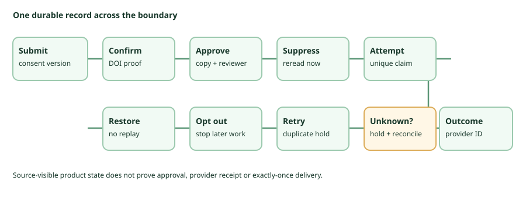

Small-list welcome decision · source synthesis · 4 Oct 2026
Choose one welcome job before choosing a sender.
For one message after double opt-in, keep an existing operated sender only if it can prove consent, approved copy, current suppression, a single accountable attempt, and provider outcomes. If it cannot, stop and repair the process. This is a conditional operator-cost judgment, not a tested product ranking.
Four requests that sound like “welcome”
| Request | What must happen | Decision boundary |
|---|---|---|
| DOI request | Ask a submitter to confirm the address. | Not the post-confirmation welcome. Preserve form, consent text, request and click evidence. Listmonk’s tagged opt-in hook and phpList’s configuration guide show mechanisms, not receipt or abuse protection. |
| One immediate welcome | Send approved content after confirmation; it may contain a download URL. | phpList v3.6.16 has a tagged immediate system-message call. Keila documents a form-level post-DOI welcome. Listmonk’s inspected confirmation path has no distinct welcome: it needs a reviewed external or manual handoff. None was tested here. A URL is not secure download entitlement. |
| Ongoing welcome campaign | Give each future confirmed subscriber one welcome-like campaign. | A finite campaign is not a persistent per-confirmation trigger. Listmonk’s campaign query selects eligible recipients, not a durable one-per-confirmation attempt ledger. |
| Delayed sequence | Schedule later steps, stop on opt-out and recover without replay. | The checked phpList system message is immediate. Its autoresponder documentation describes separate plugin/campaign/cron work, untested at this tag. One-message evidence does not authorize a series. |
The smallest conditional route
- Use what you already operate?Retain it only if the whole record below exists. Otherwise repair or stop; a manual send is not automatically safe.
- Need a new system for one immediate message?Privately evaluate phpList v3.6.16 first if PHP, web, database, SMTP and recovery work are acceptable. Its source path is not exactly-once, provider receipt or send approval. Keila v0.30.3 is a form-centered private-evaluation alternative with licence/image, restore and SMTP-outcome gates open. Listmonk v6.2.0 requires an external/manual trigger and ledger;
/api/txalone is not a consent, suppression or duplicate gate. - Need timed steps or a publication-site native welcome?Specify a separate scheduler and recovery contract, or investigate the already-operated site. Neither is vetted by this one-message audit.
One handoff record, not one successful API call

For fictional ada@example.invalid notation only, link a submit/cycle ID and consent version to DOI request and confirmation proof; named approval of the exact sender, copy, link and recipients; a just-in-time suppression reread; unique attempt ID and duplicate claim; provider acceptance, rejection or unknown outcome with correlation ID; duplicate-click and retry hold; unsubscribe; and restore reconciliation. The phpList confirmation code, Listmonk subscriber model and Keila forms documentation show pieces, not a verified end-to-end approval or provider ledger. API acceptance is not inbox delivery. Hold and reconcile an ambiguous outcome; do not resend blindly.
What must change before a real send?
Pin the complete artifact and component licence; prove isolated app/database, fictional data, no public ingress, local-sink-only egress, test-only secrets, snapshots and teardown. Approve a matrix for DOI, copy overrides, parallel/duplicate click, unsubscribe interleaving, rejection, unknown response, retry and restore. The 2 October Listmonk fixture did not run.
Review the private result, consent and opt-out basis, exact content, sender authentication, provider-event feed, current suppression, attempt policy, complaints/bounces, restore without replay, named operators and an abort route. None was satisfied or exercised in this run.
What could change this decision?
A pinned private fixture could establish different behavior. The phpList audit still lacks exact-tag signup/editor and complete-package evidence, suppression/race tests and checked send outcomes. The Keila follow-up still needs image/licence, restore, private security contact and plain-SMTP outcome proof. The Listmonk trace could be revised by a supported post-confirmation event/idempotency mechanism or an audited external ledger. An existing sender could meet the contract. Current documentation is not exact-tag runtime evidence; this 4 October reread did not change those narrow findings. Browse all dated research.